#install.packages("ISLR") # para descargar la librería de internet
library(ISLR) # para instalar la libbrería en R
Datos <- Wage # Creamos el marco de datos Datos con los datos de Wage
attach(Datos) # Para poder acceder directamente a sus variables3 Estadística descriptiva univariante
3.1 Introducción
Históricamente, la Estadística aparece con el único objetivo de recopilar datos demográficos, sociológicos o económicos. Esta concepción es incompleta aunque sigue prevaleciendo en un gran número de personas. El desarrollo de la Ciencia en general y de la Matemática en particular, ha impulsado la ampliación de los fines de la Estadística. La Estadística actual puede ser considerada como el resultado de la unión de dos disciplinas que evolucionaron independientemente hasta su fusión en el siglo XIX. Una, es la Estadística (o ciencia del Estado) que estudia la descripción de datos, y tiene unas raíces más antiguas. Otra, es el Cálculo de Probabilidades, que nació en el siglo XVII como teoría matemática para dar soporte a los denominados juegos de azar. La integración de ambas líneas de pensamiento da lugar a una ciencia que estudia cómo obtener conclusiones de la investigación empírica mediante el uso de modelos matemáticos, por lo que su estudio es importante para entender las posibilidades y limitaciones de la investigación experimental.
No hay definición de Estadística universalmente aceptada, por lo que la definiremos así:
Ciencia que recoge, ordena y analiza los datos de una muestra, extraída de una cierta población, y que, a partir de esa muestra, valiéndose del cálculo de probabilidades, se encarga de hacer inferencias acerca de la población.
La Estadística se divide en tres grandes ramas: La Estadística Descriptiva, el Cálculo de Probabilidades y la Inferencia Estadística.
La Estadística Descriptiva fue históricamente la primera que apareció. Se ocupa de la descripción y análisis de los conjuntos de datos procedentes de cualquier campo de conocimiento. Su objetivo fundamental es organizar y resumir los datos disponibles (generalmente muy numerosos). Puede ser considerada como la parte de la Estadística que se encarga de dar una descripción numérica, ordenando y simplificando de la información recogida.
El Cálculo de Probabilidades es el puente que nos permite pasar de lo afirmado con certeza en la muestra a lo pronosticado sólo con cierta probabilidad en la población. Es un mero instrumento que debemos manejar hábilmente si deseamos hacer inferencias de modo responsable y tomar decisiones con riesgo mínimo de error.
La Inferencia Estadística consiste en llegar a resultados válidos a partir de una información incompleta. O dicho de otro modo, es el conjunto de métodos que permiten, a partir de los resultados de una muestra, obtener conclusiones válidas para la población (aunque siempre con un cierto nivel de incertidumbre).
En todo trabajo de tipo experimental se distinguen siempre tres fases:
- Diseño del experimento a realizar.
- Recogida de datos.
- Análisis de los resultados obtenidos y obtención de las conclusiones.
Para las tres fases es necesaria la ciencia estadística. Generalmente, en la primera fase no se suele recurrir a ella, aunque es vital proponer varios diseños y seleccionar el menos costoso y más eficaz. En la segunda también se precisa de la estadística para que la recogida de los datos sea válida. Pero donde no se puede prescindir de ella es en la tercera fase, ya que es con el método estadístico con el que se realiza el análisis y se validan los resultados.
En palabras de la Organización Mundial de la Salud:
En todos los dominios de las ciencias experimentales, en su vertiente clínica, administrativa o de la investigación, es indispensable conocer los principios estadísticos para comprender bien los problemas, y el profesional necesita de los datos estadísticos para tomar decisiones válidas.
3.2 Definiciones básicas
Veamos una serie de Definiciones Básicas de conceptos que manejaremos a lo largo de este texto:
POBLACIÓN: Conjunto de individuos con propiedades comunes, sobre los cuáles se realiza la investigación estadística. Según el tamaño, la población puede ser: FINITA O INFINITA. En la práctica, no hay poblaciones infinitas, sino poblaciones con un número muy elevado de individuos. Las poblaciones finitas pero de tamaño muy grande son consideradas poblaciones infinitas.
INDIVIDUO: Cada uno de los elementos que componen la población.
MUESTRA: Por lo general, las poblaciones estadísticas suelen ser de gran tamaño, por lo que no se trabaja con todos los individuos que componen la población, sino con un subconjunto de la misma, que es lo que denominamos muestra. El objetivo perseguido al estudiar una muestra es poder sacar conclusiones aplicables a la población, por ello se precisa que las muestras sean representativas.
TAMAÑO MUESTRAL: Número de individuos que componen la muestra. Lo representaremos por \(n.\)
MUESTREO: Todo proceso de obtención de muestras.
EXPERIMENTO: Es cualquier proceso que permite asociar a cada individuo de una población un dato, numérico o no, de entre todos los posibles valores de un conjunto dado a priori.
ENSAYO O PRUEBA: Realización concreta de un experimento.
VARIABLES: A las características que son objeto de estudio en la población se les llama variables, ya que pueden variar de un individuo a otro. Por tanto, denominaremos variable a cualquier característica que pueda ser observada en un individuo de la población y que pueda tomar, al menos, dos valores distintos.
Distinguiremos entre variables cualitativas y cuantitativas, y dentro de éstas, entre discretas y continuas. Veámos la definición:
Variable cualitativa: Es aquella en la que el resultado de la medición no es un valor numérico, sino una cualidad o atributo.
Variable cuantitativa: Es aquella en la que el resultado de la medición es un valor numérico.
Distinguimos entre:
– Variable cuantitativa discreta: La variable toma un número contable de valores numéricos. Dicho de otro modo, es discreta si toma valores numéricos fijos y aislados, es decir, si fijados dos valores consecutivos no puede tomar ninguno intermedio.
– Variable cuantitativa continua: La variable puede tomar infinitos valores numéricos, es decir, sus posibles valores han de estar dentro de un intervalo, de modo que entre dos valores cualesquiera, por próximos que estén, siempre pueden hallarse valores intermedios.
Ejemplos de los tipos de variables
Para los ejemplos que se van a presentar en este capítulo, utilizaremos el conjunto de datos Wage, incluido en el paquete ISLR de R, que contiene información salarial y demográfica de 3000 trabajadores. Vamos a generar el marco de datos que contendrá las variables con las que vamos a trabajar:
El marco de datos creado contiene las siguientes variables:
- year: año de realización de la observación (cuantitativa discreta)
- age: edad en años (cuantitativa discreta)
- maritl: estado civil (cualitativa)
- race: raza (cualitativa)
- education: nivel educativo (cualitativa)
- region: región en la que reside (cualitativa)
- jobclass: tipo de trabajo, ya sea industrial o información (cualitativa)
- health: estado de salud (cualitativa)
- health_ins: disponibilidad de seguro sanitario (cualitativa)
- logwage: logaritmo del salario anual (cuantitativa continua)
- wage: salario anual (cuantitativa continua)
Entre las variables de este marco de datos, vemos que hay varias identificadas como cualitativas. Como queremos mostrar algunas de sus variables para poder visualizar su contenido y confirmar su tipo, vamos a trabajar en este ejemplo con solo los primeros 20 trabajadores del fichero. Mostremos, por ejemplo, la variable education para los 20 primeros datos:
education[1:20] [1] 1. < HS Grad 4. College Grad 3. Some College 4. College Grad
[5] 2. HS Grad 4. College Grad 3. Some College 3. Some College
[9] 3. Some College 2. HS Grad 3. Some College 2. HS Grad
[13] 2. HS Grad 4. College Grad 2. HS Grad 3. Some College
[17] 4. College Grad 5. Advanced Degree 4. College Grad 3. Some College
5 Levels: 1. < HS Grad 2. HS Grad 3. Some College ... 5. Advanced DegreeObservamos que esta variable es cualitativa, pues no toma valores numéricos, y que toma 5 valores distintos.
Como un ejemplo de variable cuantitativa discreta podemos visualizar el contenido de la variable age, también para sus 20 primeros valores:
age[1:20] [1] 18 24 45 43 50 54 44 30 41 52 45 34 35 39 54 51 37 50 56 37Observamos que los valores son números enteros, y que aunque en total haya 3000 valores en dicha variable, es un número contable, luego es una variable cuantitativa de tipo discreto.
Como ejemplo de una variable cuantitativa continua, veamos los primeros 20 datos de la variable wage:
wage[1:20] [1] 75.04315 70.47602 130.98218 154.68529 75.04315 127.11574 169.52854
[8] 111.72085 118.88436 128.68049 117.14682 81.28325 89.49248 134.70538
[15] 134.70538 90.48191 82.67964 212.84235 129.15669 98.59934Podemos observar que esta variable toma valores con decimales, y por tanto se considera que son un número infinito de posibles valores, aunque en nuestra muestra manejemos 3000 de dichos valores, por lo que esta variable es considera como cuantitativa continua.
El gran volumen de información del que se dispone en la actualidad hace que, para que la información sea leída de modo crítico y comprensivo, sea necesaria la ayuda de la ciencia estadística. En este tema veremos las principales herramientas de la estadística descriptiva univariante (tablas de frecuencias, representaciones gráficas y medidas descriptivas) que se utilizan para resumir y describir la información contenida en un conjunto de datos relativos a una variable, cuando ésta se considera de forma aislada, es decir, no consideramos la posible relación con otras variables.
3.3 Tablas de frecuencias
Cuando realizamos un estudio de tipo estadístico, nos encontramos con un conjunto de datos obtenidos de la observación de una o varias variables, los cuales suelen estar desordenados y pueden repetirse (dos o más individuos pueden tomar el mismo valor para una misma variable). Por eso, resulta usual utilizar una serie de reglas para agrupar y resumir los datos obtenidos. Para ello, el primer paso a seguir es la construcción de unas tablas que nos faciliten la información obtenida.
Un primer resumen de la información contenida en un conjunto de datos observados se obtiene al organizarlos en lo que se llama una tabla de frecuencias. En ésta se recogen las distintas modalidades que toma la variable (sus valores), junto con sus correspondientes frecuencias de aparición.
3.3.1 Variables cualitativas
En el caso de variables cualitativas, simplemente se trata de anotar el número de veces que aparece repetido cada uno de los posibles valores que toma la variable (lo que llamaremos clase).
El número de veces con que aparece cada valor se conoce de forma general como frecuencia absoluta.
Ejemplo
Obtener las frecuencias absoltas de la varaible race.
Solución:
Si consideramos la variable race de nuestro marco de datos completo, podemos obtener el número de trabajadores de cada raza que contiene nuestra variable. Para ello ejecutamos el comando table sobre la variable race:
table(race)race
1. White 2. Black 3. Asian 4. Other
2480 293 190 37 Así, podemos decir que la frecuencia absoluta para Black es 293, lo que indica que hay 293 trajadores de raza negra en nuestro estudio.
La agrupación anterior no es suficiente si queremos comparar esas frecuencias con otras frecuencias. Por ejemplo, supongamos que en vez de los 3000 trabajadores, consideramos solo los 1000 primeros. Si realizamos la agrupación con los 1000 primeros, los valores que obtenemos son los siguientes:
raceaux <- race[1:1000]
table(raceaux)raceaux
1. White 2. Black 3. Asian 4. Other
821 90 74 15 Ahora tenemos que, de los 1000 trabajadores considerados, 90 son de raza negra. ¿Sería correcto decir que las agrupaciones son distintas? Si miramos solo las frecuencias anteriores diríamos que sí, pero en la comparación anterior no hemos tenido en cuenta que los tamaños muestrales son distintos. En la primera agrupación hemos considerados los 3000 trabajadores de nuestro estudio, mientras que en la segunda, sólo los 1000 primeros.
Para poder comparar las dos muestras sin que afecte el tamaño del conjunto de los datos, tenemos que considerar lo que llamaremos las frecuencias relativas, que consisten en los valores que se obtienen cuando dividimos la frecuencia absoluta por el tamaño del conjunto de datos.
Ejemplo
Obtener las frecuencias relativas para la variable race para el total de trabajadores, y para solo los 1000 primeros, comparando sus resultados.
Solución:
Vamos a calcular las frecuencias relativas en los dos ejemplos anteriores. En este caso se trataría de dividir las frecuencias absolutas obtenidas anteriormente por 3000, en el primer caso, y por 1000, en el segundo caso.
Los valores que se obtienen son los siguientes:
prop.table(table(race))race
1. White 2. Black 3. Asian 4. Other
0.82666667 0.09766667 0.06333333 0.01233333 prop.table(table(raceaux))raceaux
1. White 2. Black 3. Asian 4. Other
0.821 0.090 0.074 0.015 A partir de los números anteriores, concluiríamos que el reparto de trabajadores en función de su raza es muy parecido en las dos muestras. Este resultado con valores parecedidos ha sido posible a que el tamaño de ambas muestras es grande, 3000 y 1000 individuos. Si comparamos los resultados con una muestra de tamaño muy distinto a las anteriores, entonces en los resultados podrían verse mayores diferencias.
Observamos también que los valores anteriores están entre 0 y 1, valores en tanto por 1, por lo que multiplicando por 100, obtenemos las frecuencias relativas en tanto por 100, e incluso, redondeadas con dos decimales si hacemos uso del comando round:
round(prop.table(table(race))*100, 2)race
1. White 2. Black 3. Asian 4. Other
82.67 9.77 6.33 1.23 round(prop.table(table(raceaux))*100, 2)raceaux
1. White 2. Black 3. Asian 4. Other
82.1 9.0 7.4 1.5 Fijándonos en los valores obtenidos, podemos decir que los 293 trajadores de raza negra de la muestra inicial de 3000 trabajadores, corresponden con el 9.77% del total de trabajadores.
Observar que, para obtener las frecuencias relativas, el comando prop.table se aplica sobre las frecuencias absolutas previamente obtenidas. Si utilizamos la posibilidad que ofrece RStudio de definir elementos para ser utilizados con posterioridad sin tener que volver a escribir todos los comandos, podemos hacer lo siguiente:
fi <- table(race) # de esta manera se genera el elemento fi con las frecuencias absolutas
fi # esto lo hacemos para que nos muestre el elemento creadorace
1. White 2. Black 3. Asian 4. Other
2480 293 190 37 hi <- round(prop.table(fi)*100, 2) # definimos ahora el elemento hi que serán las frecuencias
#relativas en porcentajes con dos decimales
hi # para visualizar las frecuencias relativasrace
1. White 2. Black 3. Asian 4. Other
82.67 9.77 6.33 1.23 Con esta forma recursiva de ir definiendo elementos, podemos reducir la escritura de comandos a ejecutar, pues en las definiciones de los elementos ya hay parte de dichos comandos.
Esta información, se puede recoger de forma ordenada en lo que se conoce como la tabla de frecuencias. En el caso de una variable cualitativa, la tabla de frecuencias tendrá tres columnas: la primera recogerá los distintos valores que tome dicha variable en nuestra muestra, la segunda columna indicará la frecuencia absoluta (\(f_i\)) asociada a cada valor de la variable, mientras que en la tercera columna tendremos la información de frecuencias relativas (\(h_i\)) para cada clase. Por ejemplo, para la muestra inicial de trabajadores, tenemos la siguiente tabla, con las frecuencias relativas en porcentajes con dos decimales:
| race | \(f_i\) | \(h_i (\%)\) |
|---|---|---|
| 1. White | 2480 | 82.67 |
| 2. Black | 293 | 9.77 |
| 3. Asian | 190 | 6.33 |
| 4. Other | 37 | 1.23 |
3.3.2 Variables cuantitativas discretas
Antes de ver cómo obtener la tabla de frecuencias para este tipo de variables, debemos concretar, en la práctica, cuándo vamos a considerar que una variable cuantitativa es discreta. En la definición formal que dimos al principio de este capítulo, se definió una variable cuantitativa discreta como aquella variable que toma una cantidad contable de valores numéricos distintos. Cada fila de la tabla de frecuencias, recogerá la información de las frecuencias para cada uno de esos valores distintos, y el problema es que ese número puede ser grande, y hacer que la tabla de frecuencias tenga demasiadas filas, dejando de ser adecuada para resumir la información de dicha variable. Entonces, aunque una variable cuantitativa tome un número contable de valores distintos, la consideraremos como una variable cuantitativa discreta si ese número no es demasiado grande, por ejemplo, entre 10 y 12 valores distintos como máximo, pues así nos garantizaremos una tabla de frecuencias con un número de filas tratable. Si el número de valores distintos es mayor, entonces debemos proceder a agrupar por intervalos lo valores de la variable, y estudiarla como si se tratara de una variable cuantitativa continua, como veremos después.
Como en el caso de las variables cualitativas, se trata de contabilizar el número de veces que se repite cada uno de los posibles valores discretos de la variable, pero en este caso, las frecuencias absolutas y relativas se pueden acompañar de otras frecuencias debido a que sus posibles valores son números, y por tanto, pueden ser ordenados.
De forma general, ordenando los distintos valores que puede tomar la variable de menor a mayor (que denotaremos como \(x_{(1)},x_{(2)},\ldots\)), para una variable cuantitativa discreta se definen las siguientes frecuencias:
Frecuencia absoluta: \(f_i\)=nº de veces que aparece repetido el valor \(i\)-ésimo (\(x_{(i)}\)).
Frecuencia relativa: \(h_i= f_i/n\), siendo \(n\) el tamaño de la muestra.
Frecuencia absoluta acumulada: \(F_i\)=\(f_1+f_2+\cdots+f_i=\sum_{j=1}^i f_j\). Es la suma de todas las frecuencias absolutas asociadas a valores menores o iguales al \(i\)-ésimo (\(x_{(i)}\)).
Frecuencia relativa acumulada: \(H_i= F_i/n\). Es la frecuencia absoluta acumulada dividida por el tamaño de la muestra, y que se corresponde con la suma de todas las frecuencias relativas asociadas a valores menores o iguales al \(i\)-ésimo (\(x_{(i)}\)).
Así, para el caso de una variable cuantitativa discreta, su tabla de frecuencias tendrá una columna inicial donde se indicarán los valores de la variable ordenados de nemor a mayor, uno por fila, junto con cuatro columnas adicionales, una por cada una de esas frecuencias.
Ejemplo
Obener la tabla de frecuencias de la variable year.
Solución:
Primero, verificamos que la variable year puede ser considerada como una variable cuantitativa discreta. Para ello obtenemos sus frecuencias absolutas, pues con ellas verificamos cuántos valores distintos toma esta variable:
fi <- table(year)
fiyear
2003 2004 2005 2006 2007 2008 2009
513 485 447 392 386 388 389 Hemos llamado fi a las frecuencia absolutas de year. Observar que como ya teníamos este elemento creado, si lo llamamos de la misma manera, no da ningún error, pero el anterior elemento fi es sustituido por este nuevo fi. Si queremos conservar el anterior fi para ser utilizado con posterioridad, debemos llamar de forma diferente a estas nuevas frecuencias absolutas.
En este caso, observamos que son 7 los valores distintos, y por tanto la consideraremos discreta.
Para obtener el resto de frecuencias, hacemos:
hi <- round(prop.table(table(year))*100, 2) # frec. relativas en porcentaje con dos decimales
hiyear
2003 2004 2005 2006 2007 2008 2009
17.10 16.17 14.90 13.07 12.87 12.93 12.97 Fi <- cumsum(fi) # frecuencias absolutas acumuladas
Fi2003 2004 2005 2006 2007 2008 2009
513 998 1445 1837 2223 2611 3000 Hi <- cumsum(hi) # frecuencias relativas acumuladas en porcentaje con dos decimales
Hi 2003 2004 2005 2006 2007 2008 2009
17.10 33.27 48.17 61.24 74.11 87.04 100.01 Ahora podemos obtener la tabla de frecuencias completa para la variable year:
| year | \(f_i\) | \(h_i (\%)\) | \(F_i\) | \(H_i (\%)\) |
|---|---|---|---|---|
| 2003 | 513 | 17.10 | 513 | 17.10 |
| 2004 | 485 | 16.17 | 998 | 33.27 |
| 2005 | 447 | 14.90 | 1445 | 48.17 |
| 2006 | 392 | 13.07 | 1837 | 61.24 |
| 2007 | 386 | 12.87 | 2223 | 74.11 |
| 2008 | 388 | 12.93 | 2611 | 87.04 |
| 2009 | 389 | 12.97 | 3000 | 100.01 |
3.3.3 Variables cuantitativas continuas
En el caso de variables cuantitativas continuas, no se puede proceder de igual forma. La razón es que la posibilidad de que se repitan los valores es muy pequeña y por tanto las frecuencias de cada valor no son informativas. En este caso se procede a agrupar los datos en intervalos de frecuencias. Se trata de definir una serie de intervalos (de igual amplitud) y contabilizar cuántas observaciones o datos se encuentran dentro de cada intervalo.
Existen distintos criterios que permiten decidir cuántos intervalos hemos de considerar para así poder definir los intervalos. La idea general es que no sea un número muy pequeño ni muy grande. De entre estos criterios consideraremos la regla de Sturges, que describimos a continuación.
Agrupamiento de datos por intervalos usando la regla de Sturges:
[1.] Se calcula el número de intervalos \(k\) como: \[ k = \lceil 1+\text{3.322} \log n \rceil, \] donde \(n\) es el tamaño muestral y \(\lceil x \rceil\) denota la parte entera superior de \(x\) (el número entero más pequeño superior a \(x\)). Obsérvese que \(k\) tiene que ser un número entero, ya que es el número de intervalos que vamos a construir.
[2.] Se calcula la diferencia \(R\) entre la observación máxima y la mínima (que es la amplitud que tenemos que cubrir con los intervalos, y que es lo que se conoce como el soporte o recorrido de la variable, es decir, donde la variable toma valores).
[3.] Calculamos: \[ d1=\frac{R}{k} \] tomando como amplitud de cada intervalo \(d\), el valor de \(d1\) redondeado por exceso con un número de decimales predeterminado, por ejemplo, con un decimal.
[4.] Al redondear por exceso la amplitud de los intervalos, el último intervalo cubriría algo más allá del máximo, por lo que calculamos este exceso de cobertura: \[ex = k*d - R\]
[5.] El exceso de cobertura se puede repartir equitativamente poniendo la mitad antes del valor mínimo y la otra mitad después del valor máximo. De esa forma, el primer intervalo sería \([\mbox{Mínimo} - \frac{ex}{2}, \mbox{Mínimo} - \frac{ex}{2} + d]\), y el resto de intervalos se toman en la forma \((l,l+d]\), donde \(l\) es el extremo superior del intervalo anterior. Por ejemplo, para el segundo intervalo tendríamos que \(l=\text{Mínimo} - \frac{ex}{2} + d\). En total, tendremos que construir \(k\) intervalos.
[6.] Se contabiliza cuántos datos caen en cada intervalo, lo que nos da la frecuencia absoluta de cada intervalo, es decir, el número de datos que pertenecen a ese intervalo. A partir de estas frecuencias absolutas se obtendrían el resto de frecuencias asociadas a cada intervalo y se completaría la tabla de frecuencias de la variable cuantitativa continua.
Ejemplo
Obtener la tabla de frecuencias de la variable age.
Solución:
En este caso, vamos a utilizar la variable age, que aunque sea una variable con un número contable de valores distintos, al ser este número elevado, debe ser considerada para su estudio como una variable cuantitativa continua, como podemos verificar si tratamos de obtener sus frecuencias absolutas como si fuera una variable cuantitativa discreta:
table(age)age
18 19 20 21 22 23 24 25 26 27 28 29 30 31 32 33 34 35 36 37
11 14 20 15 38 45 32 56 47 53 59 58 74 63 78 87 76 75 66 77
38 39 40 41 42 43 44 45 46 47 48 49 50 51 52 53 54 55 56 57
83 89 113 92 88 98 93 95 80 98 93 83 95 82 69 62 68 65 62 42
58 59 60 61 62 63 64 65 66 67 68 69 70 71 72 73 74 75 76 77
57 39 37 33 30 27 11 8 13 7 4 5 6 8 3 5 3 2 3 1
80
4 Entonces, una vez justificado que debe ser estudiada como una variable cuantitativa continua, procedemos de la siguiente forma:
- [1.] Número de intervalos \(k\) mediante la :
k <- ceiling(1+3.322*log10(length(age)))
k[1] 13aunque también se puede obtener directamente con el comando nclass.Sturges(age).
- [2.] Se calcula la diferencia \(R\) entre la observación máxima y la mínima, que en nuestro caso sería:
range(age)[1] 18 80R <- max(age)-min(age)
R[1] 62- [3.] Se calcula:
d1 <- R/k
d1[1] 4.769231y tomamos como amplitud de los intervalos ese valor redondeado por exceso con un decimal, es decir,
d <- ceiling((d1)*10)/10
d[1] 4.8- [4.] Calculamos el exceso:
ex <- k*d - R
ex[1] 0.4- [5.] Repartiendo por igual el exceso, se toma como primer intervalo: \([17.8, 17.8 + 4.8]=[17.8, 22.6]\).
El resto de intervalos se toma como \((l,l+d]\), siendo los extremos de estos intervalos los dados por el siguiente vector:
PuntosCorte <- seq(min(age)-ex/2, max(age)+ex/2, d)
PuntosCorte [1] 17.8 22.6 27.4 32.2 37.0 41.8 46.6 51.4 56.2 61.0 65.8 70.6 75.4 80.2Obsérvese que el primer intervalo es cerrado por ambos extremos, mientras que el resto, es abierto por el extremo inferior y cerrado por el extremo superior. Como se puede ver, el último intervalo termina más allá del valor máximo 80 porque el valor de \(d\) se ha redondeado hacia arriba.
- [6.] Se contabiliza cuántos datos caen en cada intervalo, lo que nos da la frecuencia absoluta de cada intervalo. Para ello vamos a hacer uso del mismo comando que en el caso discreto,
table, pero al estar los datos agrupados por los intervalos anteriores, debemos trasladar esa información al comando mediante parámetros adicionales de la siguiente forma:
#frecuencias absolutas variable continua
#datos agrupados en los intervalos dados por "PuntosCorte"
fi_age <- table(cut(age,breaks = PuntosCorte,include.lowest = TRUE))
fi_age
[17.8,22.6] (22.6,27.4] (27.4,32.2] (32.2,37] (37,41.8] (41.8,46.6]
98 233 332 381 377 454
(46.6,51.4] (51.4,56.2] (56.2,61] (61,65.8] (65.8,70.6] (70.6,75.4]
451 326 208 76 35 21
(75.4,80.2]
8 El comando anterior cut cierra por defecto los intervalos por la derecha y los abre por la izquierda. La opción `include.lowest’ es para incluir el mínimo en el primer intervalo en caso de que coincidiese con un dato de la muestra.
Al parámetro breaks de la función cut se le puede también dar, en lugar de los puntos de corte o extremos de los intervalos, el número de intervalos en los que se debe subdividir la varible. En este caso es el propio R quien determina quiénes deben ser los extremos de los intervalos. Por ejemplo:
table(cut(age,breaks = 5,include.lowest = TRUE))
[17.9,30.4] (30.4,42.8] (42.8,55.2] (55.2,67.6] (67.6,80.1]
522 987 1081 366 44 table(cut(age,breaks = nclass.Sturges(age),include.lowest = TRUE))
[17.9,22.8] (22.8,27.5] (27.5,32.3] (32.3,37.1] (37.1,41.8] (41.8,46.6]
98 233 332 381 377 454
(46.6,51.4] (51.4,56.2] (56.2,60.9] (60.9,65.7] (65.7,70.5] (70.5,75.2]
451 326 175 109 35 21
(75.2,80.1]
8 De la misma forma que para las variables cuantitativas discretas, tenemos también las frecuencias relativas, absolutas acumuladas y relativas acumuladas, y que se obtienen de forma similar:
#frecuencias relativas en porcentaje, 2 decimales
#utilizando que ya tenemos calculadas las frecuencias absolutas,
#se obtienen igual que para el caso discreto
hi_age <- round(prop.table(fi_age)*100, 2)
hi_age
[17.8,22.6] (22.6,27.4] (27.4,32.2] (32.2,37] (37,41.8] (41.8,46.6]
3.27 7.77 11.07 12.70 12.57 15.13
(46.6,51.4] (51.4,56.2] (56.2,61] (61,65.8] (65.8,70.6] (70.6,75.4]
15.03 10.87 6.93 2.53 1.17 0.70
(75.4,80.2]
0.27 #frecuencias absolutas acumuladas
Fi_age <- cumsum(fi_age)
Fi_age[17.8,22.6] (22.6,27.4] (27.4,32.2] (32.2,37] (37,41.8] (41.8,46.6]
98 331 663 1044 1421 1875
(46.6,51.4] (51.4,56.2] (56.2,61] (61,65.8] (65.8,70.6] (70.6,75.4]
2326 2652 2860 2936 2971 2992
(75.4,80.2]
3000 #frecuencias relartivas acumuladas
Hi_age <- cumsum(hi_age)
Hi_age[17.8,22.6] (22.6,27.4] (27.4,32.2] (32.2,37] (37,41.8] (41.8,46.6]
3.27 11.04 22.11 34.81 47.38 62.51
(46.6,51.4] (51.4,56.2] (56.2,61] (61,65.8] (65.8,70.6] (70.6,75.4]
77.54 88.41 95.34 97.87 99.04 99.74
(75.4,80.2]
100.01 Toda esta información se recoge en una tabla de manera ordenada como la que tenemos a continuación:
| age | \(f_i\) | \(h_i (\%)\) | \(F_i\) | \(H_i (\%)\) |
|---|---|---|---|---|
| [17.8,22.6] | 98 | 3.27 | 98 | 3.27 |
| (22.6,27.4] | 233 | 7.77 | 331 | 11.04 |
| (27.4,32.2] | 332 | 11.07 | 663 | 22.11 |
| (32.2,37] | 381 | 12.70 | 1044 | 34.81 |
| (37,41.8] | 377 | 12.57 | 1421 | 47.38 |
| (41.8,46.6] | 454 | 15.13 | 1875 | 62.51 |
| (46.6,51.4] | 451 | 15.03 | 2326 | 77.54 |
| (51.4,56.2] | 326 | 10.87 | 2652 | 88.41 |
| (56.2,61] | 208 | 6.93 | 2860 | 95.34 |
| (61,65.8] | 76 | 2.53 | 2936 | 97.87 |
| (65.8,70.6] | 35 | 1.17 | 2971 | 99.04 |
| (70.6,75.4] | 21 | 0.70 | 2992 | 99.74 |
| (75.4,80.2] | 8 | 0.27 | 3000 | 100.01 |
Agrupamiento de datos utilizando el paquete fdth
Si lo deseamos, podemos dejar que R haga un trabajo similar casi automáticamente, obteniendo la tabla de frecuencias completa con el uso de un único comando. Para ello, se debe instalar un paquete, llamado fdth, que tiene implementados unos comandos análogos. Veamos cómo se instala y se carga un paquete en R.
Si es la primera vez que vamos a cargar el paquete, necesitamos instalarlo previamente. Para ello, en la ventana inferior derecha, clicamos sobre la pestaña Packages -> Install y en la ventana que sale, en el cuadro Packages escribimos fdth. Como puede observarse en la consola, ello equivale a ejecutar la instrucción:
install.packages(``fdth").
Una vez que ya está instalado, podemos cargarlo desde la misma pestaña: sólo tenemos que buscar el paquete en dicha pestaña y clicar sobre el cuadradito correspondiente a dicho paquete. Observa que R ejecuta la instrucción:
library("fdth")Ahora ya tenemos disponibles los comandos que necesitamos para crear la tabla de frecuencias para nuestra variable cuantitativa continua age:
Tabla_frec <- fdt(age)
Tabla_frec Class limits f rf rf(%) cf cf(%)
[17.82,22.66) 98 0.03 3.27 98 3.27
[22.66,27.51) 233 0.08 7.77 331 11.03
[27.51,32.35) 332 0.11 11.07 663 22.10
[32.35,37.2) 381 0.13 12.70 1044 34.80
[37.2,42.04) 465 0.16 15.50 1509 50.30
[42.04,46.89) 366 0.12 12.20 1875 62.50
[46.89,51.73) 451 0.15 15.03 2326 77.53
[51.73,56.58) 326 0.11 10.87 2652 88.40
[56.58,61.42) 208 0.07 6.93 2860 95.33
[61.42,66.27) 89 0.03 2.97 2949 98.30
[66.27,71.11) 30 0.01 1.00 2979 99.30
[71.11,75.96) 13 0.00 0.43 2992 99.73
[75.96,80.8) 8 0.00 0.27 3000 100.00Obsérvese que con el comando fdt se genera la tabla completa con todas las frecuencias directamente. En concreto, en la columna:
- Class limits: tenemos los intervalos.
- f: tenemos las frecuencias absolutas.
- rf: tenemos las frecuencias relativas.
- rf(%): tenemos las frecuencias relativas en porcentaje.
- cf: tenemos las frecuencias absolutas acumuladas.
- cf(%): tenemos las frecuencias relativas acumuladas en porcentaje.
Por defecto, fdt utiliza como número de intervalos el proporcionado por la regla de Sturges, aunque se le puede especificar otra regla. Como se puede apreciar, el comando cierra por defecto los intervalos por la izquierda y los abre por la derecha. Además, fdt amplía ligeramente el soporte de la variable: el extremo inferior del primer intervalo es ligeramente inferior al valor mínimo de la variable, y el extremo superior del último intervalo es ligeramente superior al valor máximo.
min(age)[1] 18max(age)[1] 80El comando fdt tiene más argumentos que nos permiten hacer algunos cambios:
Tabla_frec2<-fdt(age,
start=min(age), # extremo inferior del primer intervalo
end=max(age), # máx. valor para el extremo superior del último intervalo
h=5, # amplitud de los intervalos
main="Tabla de frecuencias de age")
Tabla_frec2 Class limits f rf rf(%) cf cf(%)
[18,23) 98 0.03 3.27 98 3.27
[23,28) 233 0.08 7.77 331 11.03
[28,33) 332 0.11 11.07 663 22.10
[33,38) 381 0.13 12.70 1044 34.80
[38,43) 465 0.16 15.50 1509 50.30
[43,48) 464 0.15 15.47 1973 65.77
[48,53) 422 0.14 14.07 2395 79.83
[53,58) 299 0.10 9.97 2694 89.80
[58,63) 196 0.07 6.53 2890 96.33
[63,68) 66 0.02 2.20 2956 98.53
[68,73) 26 0.01 0.87 2982 99.40
[73,78) 14 0.00 0.47 2996 99.87Conviene asegurarse en este caso de que los intervalos de la tabla anterior contienen el soporte de la variable. Este no es el caso, pues el último intervalo no contiene el valor máximo debido a que no ha podido generarse el intervalo \([78, 83)\) pues excedería el valor de end facilitado. Así que hay poner un valor para end más grande:
Tabla_frec2<-fdt(age,
start=min(age),
end=max(age)+3, # extremo superior del último intervalo
h=5,
main="Tabla de frecuencias de age")
Tabla_frec2 Class limits f rf rf(%) cf cf(%)
[18,23) 98 0.03 3.27 98 3.27
[23,28) 233 0.08 7.77 331 11.03
[28,33) 332 0.11 11.07 663 22.10
[33,38) 381 0.13 12.70 1044 34.80
[38,43) 465 0.16 15.50 1509 50.30
[43,48) 464 0.15 15.47 1973 65.77
[48,53) 422 0.14 14.07 2395 79.83
[53,58) 299 0.10 9.97 2694 89.80
[58,63) 196 0.07 6.53 2890 96.33
[63,68) 66 0.02 2.20 2956 98.53
[68,73) 26 0.01 0.87 2982 99.40
[73,78) 14 0.00 0.47 2996 99.87
[78,83) 4 0.00 0.13 3000 100.00Otra forma de poder controlar los intervalos es indicarle cuántos queremos y dejar que fdt determine automáticamente quiénes deben ser para cubrir el recorrido de la variable:
Tabla_frec3<-fdt(age,
k=5, # número de intervalos a realizar
main="Tabla de frecuencias de age")
Tabla_frec3 Class limits f rf rf(%) cf cf(%)
[17.82,30.42) 522 0.17 17.40 522 17.40
[30.42,43.01) 1085 0.36 36.17 1607 53.57
[43.01,55.61) 983 0.33 32.77 2590 86.33
[55.61,68.2) 370 0.12 12.33 2960 98.67
[68.2,80.8) 40 0.01 1.33 3000 100.003.4 Representaciones gráficas
Además de resumir la información en forma de tablas de frecuencias, también se pueden realizar gráficas para, a simple vista, darse una idea de cómo están distribuidos los datos. El tipo de gráfica particular que se suele utilizar depende del tipo de variable que se esté analizando.
Para explicar los distintos tipos tipos de gráficas, seguiremos utilizando el conjunto de datos Wage, incluido en el paquete ISLR de R, que contiene información salarial y demográfica de 3000 trabajadores. Recordemos que contiene las siguientes variables:
- year: año de realización de la observación (cuantitativa discreta)
- age: edad en años (cuantitativa discreta)
- maritl: estado civil (cualitativa)
- race: raza (cualitativa)
- education: nivel educativo (cualitativa)
- region: región en la que reside (cualitativa)
- jobclass: tipo de trabajo, ya sea industrial o información (cualitativa)
- health: estado de salud (cualitativa)
- health_ins: disponibilidad de seguro sanitario (cualitativa)
- logwage: logaritmo del salario anual (cuantitativa continua)
- wage: salario anual (cuantitativa continua)
Si se cerró R tras la sección de tablas anterior, habría que volver a cargar los datos. Si, por el contrario, la sesión sigue abierta, no será necesario volver a cargar los datos. Nosotros aquí, aunque no hemos cerrado la sesión, vamos a volver a cargar los datos, y los vamos a asignar a un nuevo marco de datos. Para ello, vamos primeramente a cargar la librería, y a crear un marco de datos (dataframe) con dichos datos, al que llamaremos DatosSal (obsérvese que el conjunto de datos del paquete ISLR se llama Wage, con la ‘W’ en mayúscula, y eso no se debe confundir con la variable wage del salario anual, que va con la ‘w’ en minúsculas).
install.packages("ISLR") # para descargar la librería de internet
library(ISLR) # para instalar la libbrería en R
DatosSal <- Wage # Creamos el marco de datos DatosSal con los datos de Wage
attach(DatosSal) # Hacemos un attach de dicho marco de datos para poder
# acceder directamente a sus variablesObsérvese que como ya teníamos el marco de datos anterior, llamado Datos, cuyas variables tenían los mismos nombres que las del marco de datos que acabamos de crear, el programa nos lanza una advertencia diciendo que ya existían variables con el mismo nombre y que las ha machacado (ha sobreescrito sus valores). Aunque en este caso nos da igual, en general se debe tener cuidado si se abren varios marcos de datos que contengan variables con el mismo nombre. Si se deseara trabajar con dos variables que se llaman igual pero que están en marcos de datos diferentes, entonces habría que ir haciendo un detach del marco de datos que contiene la variable con la que no queremos trabajar y un attach del marco con la variable con la que sí queremos trabajar, o bien, no hacer attach del marco de datos y acceder a sus variables poniendo nombre_marco_datos$nombre_variable.
3.4.1 Diagrama de sectores
Los diagramas de sectores son adecuados para variables que toman pocos valores diferentes y cuando entre dichos valores no hay ningún orden preestablecido. En concreo, es el tipo de gráfica que se suele utilizar para variables cualitativas (siempre y cuando dichas variables tengan pocas categorías).
En esta gráfica se divide un círculo en sectores proporcionales a la frecuencia (absoluta o relativa) de cada uno de los posibles valores de la variable cualititativa.
En R dicha gráfica se obtiene con el comando pie. Es importante destacar que el comando se aplica a una tabla de frecuencias. No importa si las frecuencias son absoclutas o relativas, puesto que el resultado gráfico es el mismo (la información se muestra de manera relativa, ya que se divide el todo (el círculo) en partes (en sectores)). Por tanto, primero se debe calcular la correspondiente tabla de frecuencias, y es a dicha tabla a la que se le aplica el comando pie.
Ejemplo
Dibujar el diagrama de sectores de la variable maritl que da el estado civil de los encuestados.
Solución:
Obsérvese que maritl es una variable cualitativa, por tanto, tiene sentido calcular el diagrama de sectores para dicha variable.
Primeramente hacemos la gráfica asociada a las frecuencias absolutas:
pie( table(maritl) ) # se aplica pie a la tabla de frecuencias absolutas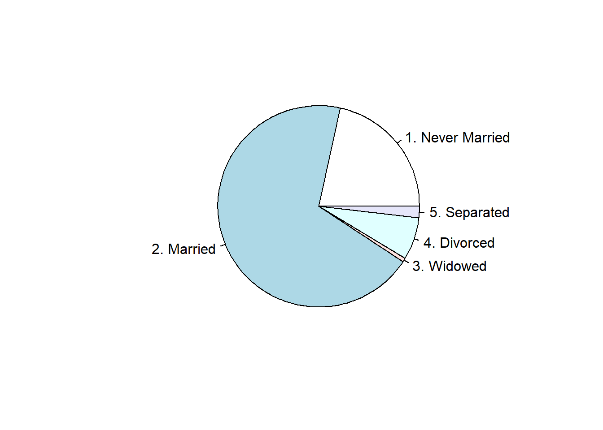
Y ahora la asociada a las frecuecias relativas:
pie( prop.table( table(maritl) ) ) # se aplica pie a la tabla de frecuencias relativas
Como vemos, el resultado es el mismo.
Como muchas gráficas en R, el diagrama de sectores se puede decorar añadiendo argumentos adicionales al comando:
pie( table(maritl),
main="Diagrama de sectores de la variable maritl", # título principal
labels = c("soltero","casado","viudo","divorciado","separado"), # etiquetas de los sectores
col = c("cyan", "purple", "yellow","red","green") # colores de los sectores
)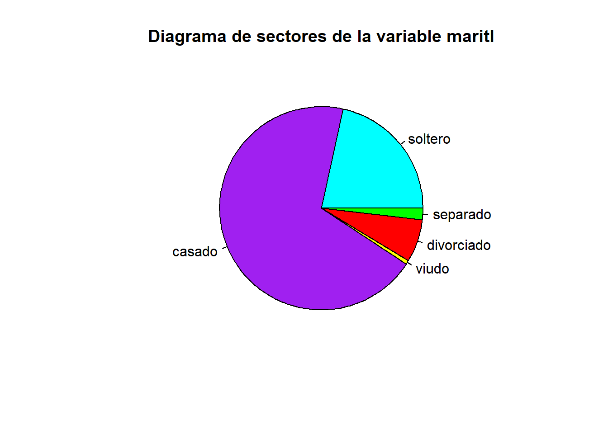
Para el comando anterior, a la hora de poner las etiquetas (labels) es necesario saber el orden en el que el programa va a dibujar cada sector. Eso se puede saber con el comando unique, que nos devuelve los valores diferentes que toma una variable, en el orden interno en que los gestiona R (ver la última línea que ofrece como resultado el siguiente comando):
unique(maritl)[1] 1. Never Married 2. Married 4. Divorced 3. Widowed
[5] 5. Separated
Levels: 1. Never Married 2. Married 3. Widowed 4. Divorced 5. Separated3.4.2 Diagramas de barras
El diagrama de barras permite representar tanto variables cualitativas como cuantitativas discretas.
Consiste en dibujar sobre cada uno de los distintos valores de la variable un rectángulo (una barra, de ahí su nombre) de altura proporcional a la frecuencia observada de cada valor. Se pueden hacer por tanto diagramas de barras para frecencias absolutas o relativas, ya sean sin acumular o acumuladas.
El comando que se emplea en R es barplot, y al igual que sucedía con el comando pie, el argumento que hay que pasarle es el de la tabla de frecuencias que se desea dibujar.
Ejemplo
Dibujar el diagrama de barras de frecuencias absolutas de la varaible maritl que da el estado civil de los encuestados.
Solución:
martil es una variable cualitativa, así que tiene sentido calcular este diagrama de barras.
barplot( table(maritl) )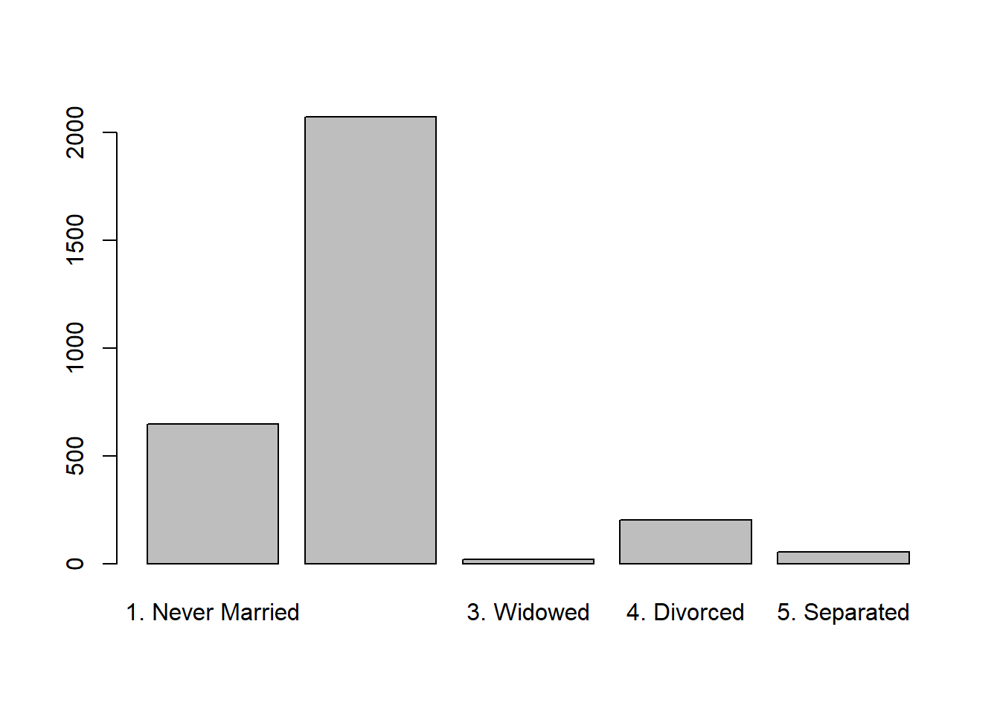
Como vemos, en el eje \(x\) se pone cada uno de los posibles valores que toma la variable (si hay espacio, porque como vemos, para los casados no hay espacio y no se ha puesto) y sobre él se levanta una barra que tiene altura igual a la frecuencia que se está dibujando, que en este caso es la frecuencia absoluta.
Como muchas gráficas en R, el diagrama de barras se puede decorar añadiendo argumentos adicionales al comando:
barplot( table(maritl),
main="Diagrama de barras de la variable maritl", # título principal
xlab= "estado civil", # título eje x
ylab= "nº de personas (frec. absolutas)", # título eje y
names.arg = c("soltero","casado","viudo","divorciado","separado"), # etiquetas de las barras
col = c("cyan", "purple", "yellow","red","green") # colores de las barras
)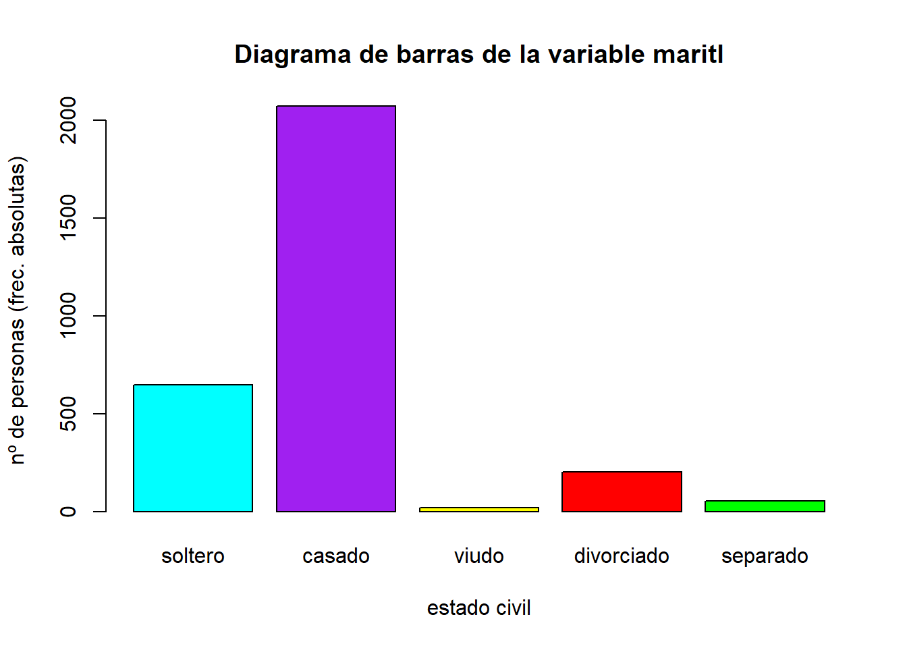
Ejemplo
Dibujar los diagramas de barras de frecuencias relativas y de frecuencias absolutas acumuladas de la variable year que da las personas encuestadas en cada año.
Solución:
La variable year es cuantitativa discreta, por lo que se pueden cacular sus frecuencias acumuladas. Además toma pocos valores diferentes, por el diagrama de barras es apropiado para representar gráficamente las tablas de frecuencias.
Comenzaremos haciendo el diagrama de barras de frecuencias relativas:
barplot( prop.table( table(year) ) )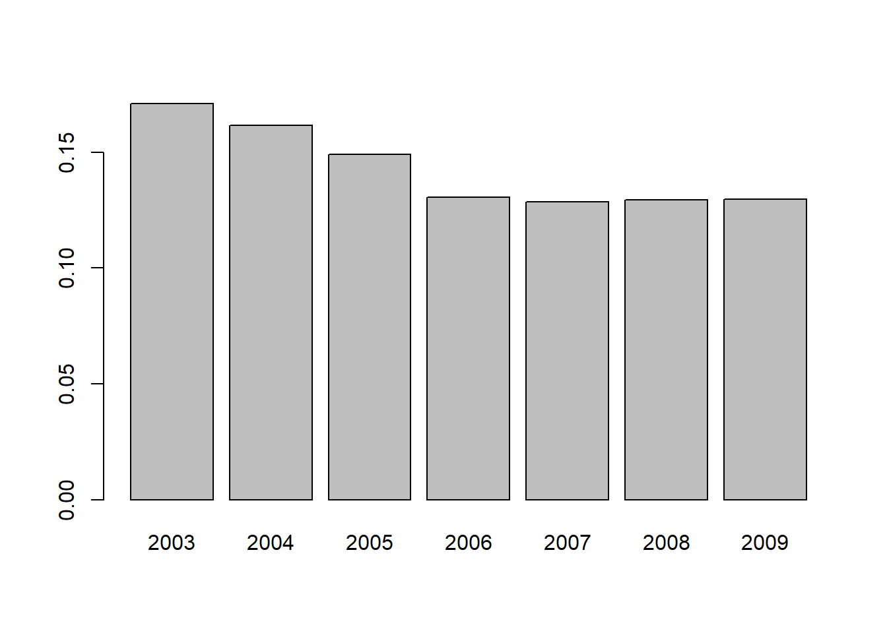
Obsérvese ahora la escala del eje \(y\). Y es que en la gráfica anterior la altura de las barras coinicide con el valor de las frecuencias relativas de la variable, que son números entre 0 y 1.
Dibujemos ahora la tabla de frecuencias absolutas acumladas, con algo de decoración:
barplot( cumsum( table(year) ),
main= "Diagrama de barras de frecuencias absolutas acumuladas de year",
xlab= "año de la encuesta", # título eje x
ylab= "nº de personas (frec. abs. acumul.)", # título eje y
col = c("red") # colores de las barras
)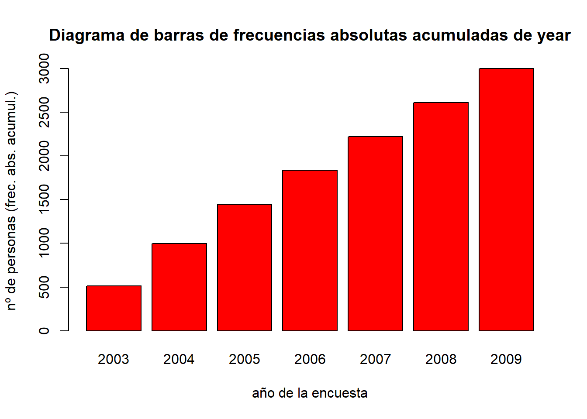
Dado que se han dibujado frecuencias absolutas acumuladas, cada barra es más alta que la anterior, ya que acumula el número de personas encuestadas no sólo en su año, sino también de los anteriores.
3.4.3 Histogramas
Los histogramas se utilizan para representar las tablas de frecuencias de variables cuantitativas continuas. Son similares a los diagramas de barras, pero ahora, las barras que se levantan sobre cada intervalo no van independientes unas de otras, si que van juntas unas a otras. Eso es así porque la variable con la que se trabaja es continua y lo que se hace es romper la variable en intervalos, y es sobre cada intervalo sobre el que se levanta el rectángulo correspondiente. Como la variable es continua, entre un intervalo y el siguiente no hay hueco, por lo que los rectángulos van contiguos, sin espacio entre ellos.
El comando que se emplea en R es hist, y a diferencia de los comandos pie o barplot, esta vez el argumento que hay que pasarle es el de la variable que se desea representar. El número de intervalos en que se subdivide la variable continua lo determina el propio programa R, aunque su valor se puede fijar con el argumento breaks. A dicho argumento se le puede pasar:
- o bien el número (aproximado) de intervalos en que se desea que se subdivida la variable (todos los intervalos tienen la misma amplitud),
- o bien un vector con la indicación de cada uno de los puntos de corte.
Por defecto, las frecuencias que se dibujan son las absolutas (freq=TRUE). Si se desea dibujar las frecuencias relativas se debe indicar explícitamente haciendo el argumento freq=FALSE.
Ejemplo
Dibujar el histograma de frecuencias absolutas de la varaible wage que da el salario anual.
Solución:
La variable wage es cuantitativa continua. El histograma pedido se puede obtener con el comando:
hist(wage)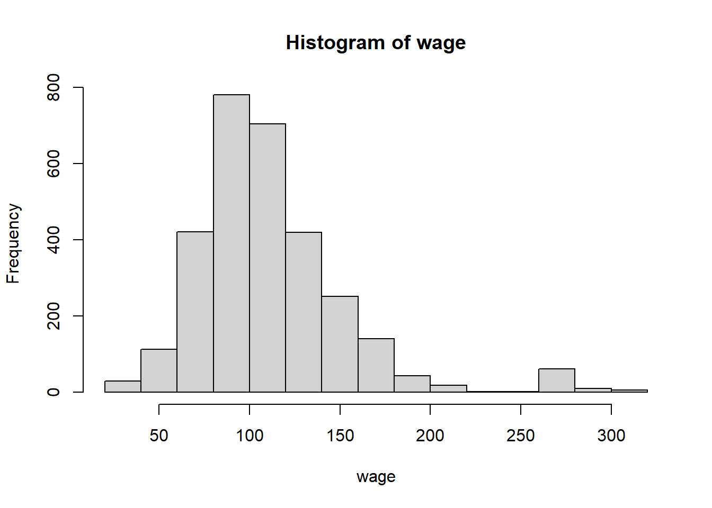
Como vemos, por defecto se ha subdivido la variable en 15 intervalos, aunque alguno de ellos no tiene datos. Según la regla de Sturges, la variable se debería subdividir en 13 intervalos:
nclass.Sturges(wage)[1] 13Podemos repetir el histograma, pero ahora sugiriendo que la variable se divida en 10 intervalos, y obtenemos:
hist(wage,
main = "Histograma de frecuencias absolutas de wage",
xlab = "ingresos anuales",
breaks = 10,
ylab = "nº de personas (frec. absolutas)",
col = "blue"
)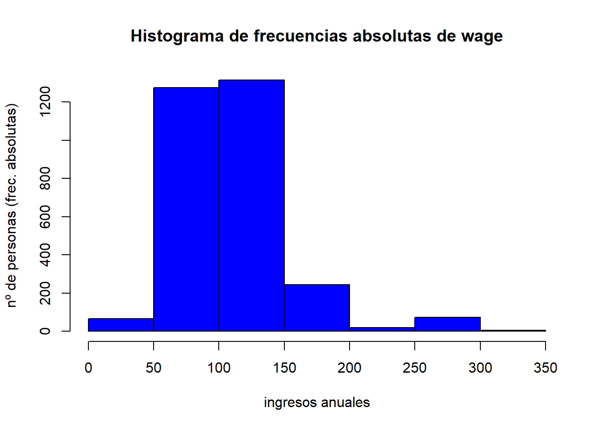
Como vemos, aunque hemos sugerido 10 intervalos, el procediiento ha subdividido la variable en 7.
Si deseamos tener un control más exhaustivo del número de intervalos y sus puntos de corte, podemos decirle directamente cuáles queremos que sean dichos puntos de corte. Por ejemplo, si queremos que en el histograma haya el número de intervalos que dice la regla de Sturges, empezando desdel el valor mínimo de la variable, hasta el valor máximo, la amplitud de cada intervalo deber ser entonces \[ amplitud=\frac{\max(wage) - \min(wage)}{nclass.Sturgess(wage)} \] Si hacemos eso obtenemos lo siguiente:
amplitud = (max(wage) - min(wage))/nclass.Sturges(wage)
hist(wage,
breaks = seq(min(wage), max(wage), amplitud),
col = "purple"
)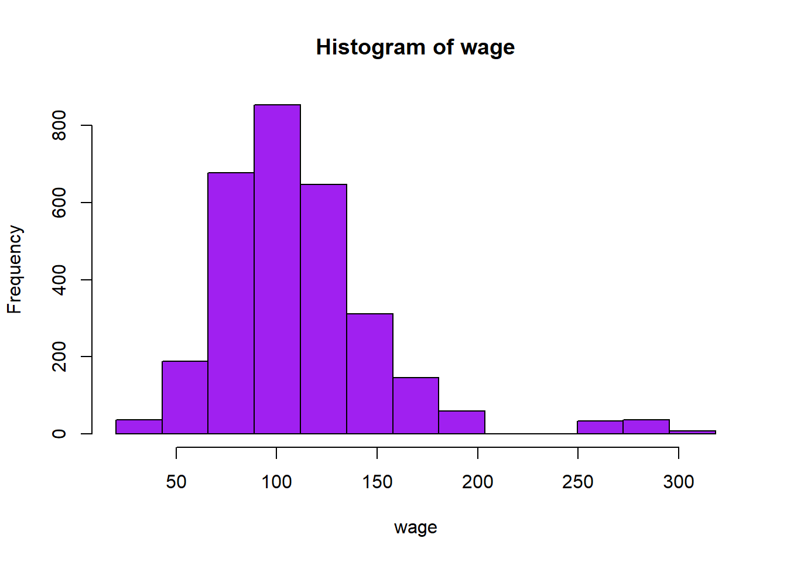
La orden seq crea una sucesión de puntos que van desde el valor mínimo de wage hasta su máximo, con un paso entre punto y punto igual a la amplitud calculada.
Ejemplo
Dibujar el histograma de frecuencias relativas de la varaible wage que da el salario anual.
Solución:
Como las frecuencias que se desea dibujar ahora son las relativas, debemos poner freq=FALSE.
hist(wage,
freq=FALSE)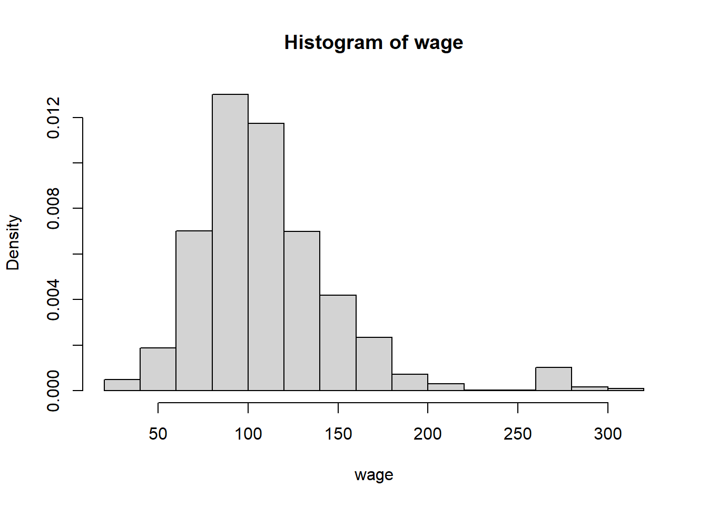
Como podemos ver, aunque el aspecto de la gráfica sea idéntico a cuando se emplean las frecuencias absolutas, ahora la escala del eje \(y\) es diferente, puesto que representa frecuencias relativas.
Ejemplo
Dibujar el histograma de frecuencias absolutas acumuladas de la varaible wage subdividiendo la variable en el número de intervalos que dice la regla de Sturgess.
Solución:
Para las frecuencias acumuladas la cosa es un poco más laboriosa.
Primero calculamos el histograma normal, aunque no lo dibujamos. En su lugar, vamos a guardar toda su información en hist_aux.
amplitud <- (max(wage) - min(wage))/nclass.Sturges(wage)
PuntosCorte <- seq(min(wage), max(wage), amplitud)
hist_aux <- hist(wage,
breaks = PuntosCorte,
plot = FALSE) # no lo dibujamos: archivamos su información en hist_auxVeamos qué es lo que se guarda en hist_aux.
str(hist_aux) List of 6
$ breaks : num [1:14] 20.1 43 66 88.9 111.9 ...
$ counts : int [1:13] 37 188 677 853 647 311 146 60 1 1 ...
$ density : num [1:13] 0.000538 0.002731 0.009836 0.012393 0.0094 ...
$ mids : num [1:13] 31.6 54.5 77.4 100.4 123.3 ...
$ xname : chr "wage"
$ equidist: logi TRUE
- attr(*, "class")= chr "histogram"Como vemos hist_aux es en realidad una lista de 6 variables. De ellas:
- breaks: guarda los puntos de corte
- counts: guarda las frecuencias absolutas
- density: guarda las frecuencias relativas divididas entre la amplitud del intervalo.
- mids: son los puntos medios de los intervalos
Sabido esto, lo que vamos a hacer es machacar los valores de la variable counts, y en su lugar vamos a poner las frecuencias que queremos calcular, que en este caso son las frecuencias acumuladas:
hist_aux$counts <- cumsum(hist_aux$counts) Y hecho esto, dibujamos entonces el histograma modificado:
plot(hist_aux) # dibujamos el histograma con la orden plot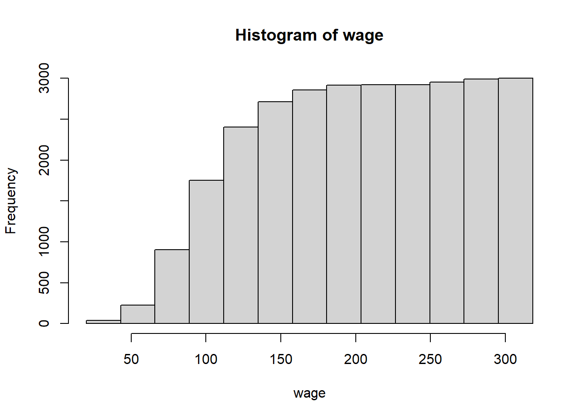
Como siempre, las gráficas se pueden decorar más con argumentos adicionales:
plot(hist_aux,
xaxt = "n", # no dibuja el eje X
yaxt = "n", # no dibuja el eje Y
col = "yellow", # color de las barras
main = "Histograma de frec. absol. acumul",
xlab = "Intervalos",
ylab = "Frec. absolutas acumuladas")
axis(1, at=PuntosCorte,cex=0.1)
text(hist_aux$mids, hist_aux$counts/2, labels =hist_aux$counts, col = "purple", cex=0.7)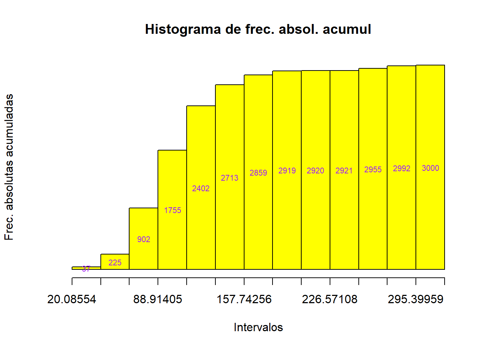
La orden axis(i, at=...) dibuja el eje correspondiente al valor de \(i\) (si \(i=1\) se refiere el eje de abcisas, y si \(i=2\), al de ordenadas), con marcas en los lugares indicados por el vector definido mediante at.
La última orden pone texto en las coordenadas dadas por los dos primeros parámetros, que en este caso dan el punto medio de cada rectángulo, y ahí se escrible la etiqueta indicada, que en este caso es la frecuencia abssoluta acumulada, y lo hace en color púrpura con un tamaño de 0.7 respecto del tamaño normal.
Vimos a la hora de elaborar tablas de frecuencias que el paquete fdth permitía obtener dichas tablas de una forma muy sencilla. Con los hitogramas sucede lo mismo. Se pueden graficar las tablas que genera el paquete fdt con el comando plot. El tipo de histograma se especifica con el argumento type:
fh: frecuencias absolutas.rfh: frecuencias relativas.cfh: frecuencias absolutas acumuladas.cfph: frecuencas relativas acumuladas en %.
Ejemplo
Dibujar el histograma de frecuencias relativas acumuladas de la varaible wage que da el salario anual.
Solución:
Recordemos que para trabajar con el paquete fdth lo primero es tener dicho paquete el ordenador, e instlalarlo. Si no está en ordenador se puede obtener con el comando
install.packages("fdth")o bien, eligiendo en R-studio, sucesivamente, las opciones Packages - Install y en el cuadro que sale poner fdth (no olvidar que el cuadro Install dependencies debe estar marcado). Una vez descargado, se instala con el comando
library(fdth)o bien haciendo click sobre el cuadrado del nombre de dicho paquete en la lista de paquetes disponibles.
Lo primero es generar la tabla con el comando fdt:
tabla <- fdt(wage)Y finalmente dibujamos el histograma deseado:
plot(tabla,
type="cfph")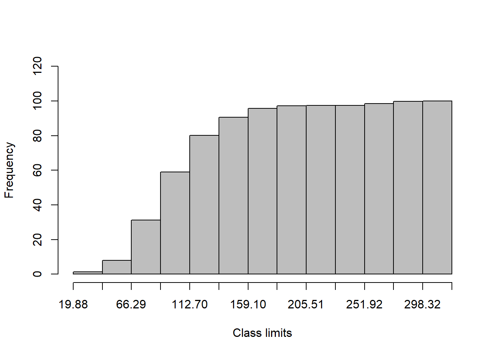
Como siempre, se puede decorar el gráfico con argumentos adicionales:
plot(tabla,
type="cfph",
main = "Histograma de frecuencias relativas acumuladas en %",
xlab = "ingresos anuales",
ylab = "Frecuencia relativa acumulada en %",
col = "blue")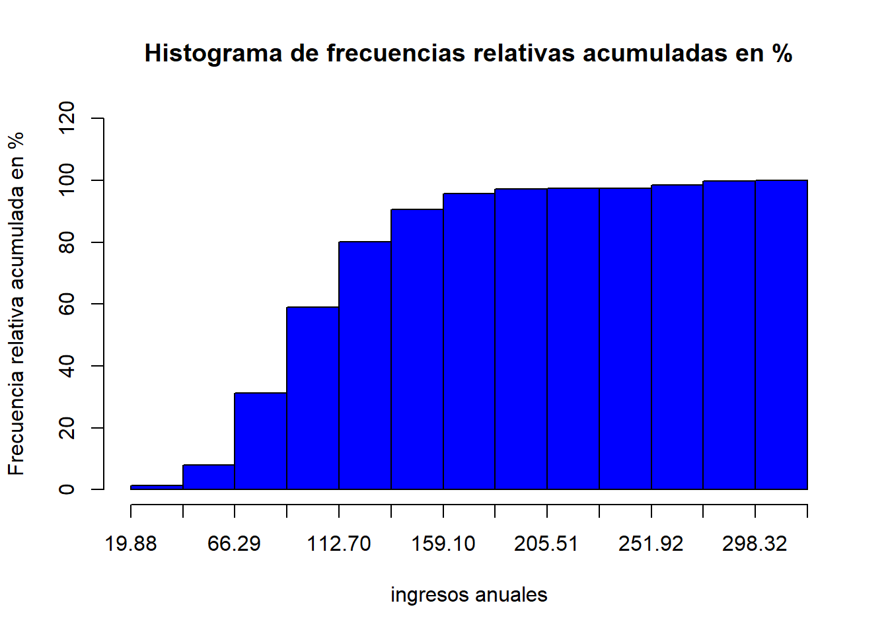
3.5 Medidas descriptivas (de variables cuantitativas)
Las medidas descriptivas permiten dar un resumen cuantitativo de los datos en términos de una serie de números, los cuales ponen de manifiesto los principales rasgos de la variable. Estas medidas sólo tiene sentido calcularlas para variables cuantitativas. A lo largo de esta última sección, consideraremos una muestra de \(n\) valores \(x_1,x_2,\ldots,x_n\) de una variable \(X\) cuantitativa.
Distinguiremos entre medidas de localización, dispersión y simetría. Para los ejemplos, utilizaremos la variable wage que daba los ingresos anuales de las personas encuestadas en miles de dólares al año, y la variable age que daba su edad en años.
3.5.1 Medidas de localización
Las medidas de localización, también conocidas como medidas de posición, sirven para identificar en qué zona de valores se encuentran los datos.
Moda: es el valor que más se repite, esto es, el valor con la frecuencia absoluta más grande. En el caso de variables cuantitavas discretas en las que los datos no están agrupados en intervalos, es el valor del dato que más se repite. Para las variables cuantitativas continuas, en las que los datos se tabulan subdividiéndolas en intervalos, es el punto medio del intervalo con mayor frecuencia absoluta. A dicho intervalo se le llama intervalo modal. No hay un comando específico en
Rpara determinar la moda, pero es inmedito identificarla a partir de la tabla de frecuencias.Así, por ejemplo, si trabajamos con la variable
age, que es cuantitva discreta, y calculamos su tabla de frecuencias,
table(age)age
18 19 20 21 22 23 24 25 26 27 28 29 30 31 32 33 34 35 36 37
11 14 20 15 38 45 32 56 47 53 59 58 74 63 78 87 76 75 66 77
38 39 40 41 42 43 44 45 46 47 48 49 50 51 52 53 54 55 56 57
83 89 113 92 88 98 93 95 80 98 93 83 95 82 69 62 68 65 62 42
58 59 60 61 62 63 64 65 66 67 68 69 70 71 72 73 74 75 76 77
57 39 37 33 30 27 11 8 13 7 4 5 6 8 3 5 3 2 3 1
80
4 nos puede resultar difícil saber cuál es la frecuencia absoluta más grade. El comando which.max nos devuelve precisamente dicho valor:
which.max(table(age))40
23 El resultado diche que el máximo se obtiene en el valor 40 (que ocupa la posición número 23). Efectivamente, ha habido 113 personas encuestadas cuya edad era de 40 años. Como dicho valor es el máximo, podemos decir que la moda de la variable edad es 40.
Para el caso de la variable wage, que es continua, podemos saber cuál es su intervalo modal calculando la tabla de frecuencias absolutas y viendo en qué intervalo se alcanza el máximo de dichas frecuencias:
table( cut(wage, breaks = nclass.Sturges(wage), include.lowest = TRUE) )
[19.8,43] (43,66] (66,88.9] (88.9,112] (112,135] (135,158] (158,181]
37 188 677 853 647 311 146
(181,204] (204,227] (227,250] (250,272] (272,295] (295,319]
60 1 1 34 37 8 which.max(table(cut(wage,breaks = nclass.Sturges(wage)))) (88.9,112]
4 Vemos en este caso que el intervalo modal es \((88.9,112]\) (que es el cuarto de los intervalos) que tiene una frecuencia absoluta de 853. La moda es entonces el punto medio de dicho intervalo:
(88.9+112)/2[1] 100.45- Media: Es el valor central de las observaciones, entendiendo central como el valor que menos se aleja de todos los datos a la vez. Se calcula como el valor promedio de las observaciones: \[
\overline x= \frac{x_1+x_2+\cdots+x_n}{n}.
\] En
Rse calcula con el comandomean:
mean(wage)[1] 111.7036Vemos por ejemplo que el valor medio de la variable de los ingresos es \(111.7036\) miles de dólares.
- Mediana: Es el valor que deja el 50% de los datos a su izquierda y el restante 50% a su derecha y se denota por \(M_e\). Mientras que la media es más apropiada para distribuciones simétricas (analizaremos la simetría más adelante), en el caso de distribuciones asimétricas, la medida de localización más apropiada es la mediana.
median(wage)[1] 104.9215Como vemos, la mediana de la variable de los ingresos es \(M_e=104.9215\) miles de dólares.
- Percentil \(p\): es el valor que deja el \(p\times 100\)% de los datos a su izquierda y el restante \((1-p)\times 100\)% a su derecha. Se denota por \(Q_p\). Observamos que \(Q_{0.50}=M_e\). De especial interés es el caso de \(p=0.25\) y \(p=0.75\), que reciben el nombre de cuartil inferior y superior, respectivamente, que se suelen denotar por \(Q_1\) y \(Q_3\). La mediana también se puede representar por \(Q_2\).
quantile(wage,c(0.25,0.75)) 25% 75%
85.38394 128.68049 Vemos que \(Q_{0.25}=(Q_1)=85.38394\) y que \(Q_{0.75} = (Q_2) = 128.68049\).
Si no indicamos los valores de \(p\) para los que queremos los percentiles, por defecto el comando nos devuelve los cuartiles, incluyendo los percentiles a nivel 0% y 100%, que se corresponden, respectivamente, con los valores mínimo y máximo de la muestra de datos.
quantile(wage) 0% 25% 50% 75% 100%
20.08554 85.38394 104.92151 128.68049 318.34243 Una forma rápida de obtener la media, la mediana y los cuartiles es con el comando summary:
summary(wage) Min. 1st Qu. Median Mean 3rd Qu. Max.
20.09 85.38 104.92 111.70 128.68 318.34 3.5.2 Medidas de dispersión
Las medidas de dispersión indican lo dispersas que están las observaciones, usualmente respecto de la media, y es un indicador de la variabilidad que hay en el conjunto de observaciones.
- Rango o recorrido: Es la amplitud del intervalo comprendido entre los valores mínimo y máximo de la variable, \(R=\max\{x_1,\ldots,x_n\}-\min\{x_1,\ldots,x_n\}\) y se puede obtener de las dos formas siguientes:
max(wage)-min(wage)[1] 298.2569diff( range(wage) ) [1] 298.2569La máxima diferencia que puede haber entre dos datos cualesquiera viene dada precisamente por el rango. Esta es una medida un tanto extrema de la variabilidad, dado que sólo tiene en cuenta los valores máximo y mínimo de la variable. Por eso se suelen utilizar otras medidas que no tengan en cuenta sólo los valores más extremos.
- Rango intercuartílico: Es la diferencia entre el cuartil superior (el \(Q_3\)) y el cuartil inferior (el \(Q_1\)). Se representa por \(IQR=Q_3-Q_1\). Obsérvese que en el intervalo \([Q_1,Q_3]\) está el 50% de los datos y son precisamente los datos más centrales de la muestra. Se puede calcular de una de las dos siguientes formas:
quantile(wage,0.75)-quantile(wage,0.25) 75%
43.29655 IQR(wage)[1] 43.29655La amplitud de este intervalo puede ser más informativa que el rango. Pero no tiene en cuenta todos los datos, cosa que sí hacen las siguientes medidas.
- Varianza y cuasi-varianza: Mide el promedio de las diferencias al cuadrado entre las observaciones y su valor medio.
\[
s^2=\frac{(x_1-\overline x)^2+(x_2-\overline x)^2+\cdots+(x_n-\overline x)^2}{n}=\frac{x_1^2+x_2^2+\cdots+x_n^2}{n}-\overline{x}^2.
\] En R no hay ninguna medida que calcule directamente dicho valor, aunque sí para calcular la denomidana cuasi-varianza, que tiene una expresión similar a la varianza, salvo que el denominador va dividido por el tamaño de la muestra menos 1:
\[
S^2=\frac{(x_1-\overline x)^2+(x_2-\overline x)^2+\cdots+(x_n-\overline x)^2}{n-1} = s^2 \frac{n}{n-1}.
\] Para muestras grandes los valores de la cuasi-varianza y de la varianza son prácticamente iguales, aunque para muestras pequeñas puede haber más diferencia. La cuasi-varianza muestral se puede calcular con R con el comando var, y a partir de ella, se puede calcular la varianza, ya que \[
s^2= S^2\frac{n-1}{n}
\]
Así, la cuasi-varianza de wage vale 1741.276 y su varianza es 1740.695, tal y como puede verse en:
var(wage)[1] 1741.276n <- length(wage)
varianza <- var(wage)* (n-1)/n
varianza[1] 1740.695El problema de las dos medidas anteriores es que no respetan las unidades de medida. Si la variable \(X\) mide longitud en cm, entonces las unidades de la varianza y la cuasi-varianza serían cm\(^2\). Si la variable \(X\) son años, entonces la varianza y la cuasi-varianza serían años\(^2\). Para evitar este problema, se definen las siguientes medidas:
Desviación típica y cuasi-desviación típica: son las raíces cuadradas de la varianza y la cuasivarianza, respectivamente, \[ s=+\sqrt{s^2}, \quad S=+\sqrt{S^2}. \] Al tomar raíces cuadradas, la desviación típica y la cuasi-desviación típica está en las mismas unidades en que se mide la variable. Tanto la varianza (o cuasi-varianza) como la desviación típica (o cuasi-desviación típica) nos indican lo representativa que es la media muestral como valor representativo para los datos. Una desviación típica pequeña (teniendo en cuenta las unidades de la variable, no de manera absoluta) nos dice que los valores del conjunto de datos son muy similares a la media, mientras que un valor alto (teniendo en cuenta las unidades de la variable, no de manera absoluta) díría que son muy distintos a la media.
Coeficiente de variación: Es un coeficiente adimensional, es decir, no depende de las unidades en las que se toma la variable, que mide también la variabilidad promedio de los datos respecto de la media. Viene dado por: \[ CV=\frac{s}{\overline x} \] Al ser adimensional, resulta de gran utilidad para comparar la variabilidad entre diferentes variables. Se puede interpretar como el porcentaje de variabilidad (si multiplicamos el CV por 100 para pasarlo a porcentaje) de una variable, ya que el coeficiente de variación suele estar entre 0 y 1.
sqrt( var(wage)*((n-1)/n) ) / mean(wage) [1] 0.3735031Por ejemplo, el coeficiente de variación de wage es de 0.3735031.
Obsérvese que la media muestral, por sí sola, no es una medida representativa de los datos de la población. Hace falta también saber en qué medida varían los datos respecto de dicho valor.
3.5.3 Medidas de simetría
Otro rasgo o característica importante de los datos es si estos presentan simetría respecto de los valores centrales o no. Podemos observar esta característica en los histogramas de frecuencias absolutas. Se trata de ver si a la izquierda y a la derecha de la media tenemos un reparto de frecuencias similar o si a un lado se presentan más datos que en el otro. Cuando las frecuencias absolutas son similares a un lado y a otro decimos que hay simetría, si hay más a la derecha que a la izquierda, decimos que hay asimetría negativa y, si es al revés, decimos que hay asimetría positiva.
El coeficiente de asimetría de Fisher es uno de los valores más usados para medir la asimetría de los datos. Está definido como: [ = . ] Hay un comando en R, skewness, que permite calcular directamente dicho coeficiente, pero es una función definida dentro del paquete moments. Por lo que primero habrá que instalar dicho paquete (descargándolo antes si fuera necesario). Si el coeficiente es próximo a cero los datos presentan simetría y si es positivo (negativo) entonces los datos presentan asimetría positiva (negativa). Si los datos presentan una fuerte asimetría, la media no es muy representativa como valor central de los datos y es más recomendable usar la mediana como medida de localización central.
install.packages("moments") # para descargarlo de internet, si no está en el disco duro del ordenadorpackage 'moments' successfully unpacked and MD5 sums checked
The downloaded binary packages are in
C:\Users\JoseM\AppData\Local\Temp\RtmpIHqmBO\downloaded_packageslibrary("moments") # para activar el paquete en R
skewness( wage )[1] 1.681489En nuestro ejemplo, tenemos asimetría positiva (el coeficiente de asimetrís de Fisher vale 1.681489), por lo que hay un mayor número de observaciones a la izquierda de la media, como podemos observar en el histograma de frecuencias absolutas:
plot(tabla,
type="fh",
main = "Histograma de frecuencias absolutas de la variable wage",
xlab = "ingresos anuales",
ylab="Frecuencia absoluta",
col="blue") #histograma de frecuencias absolutas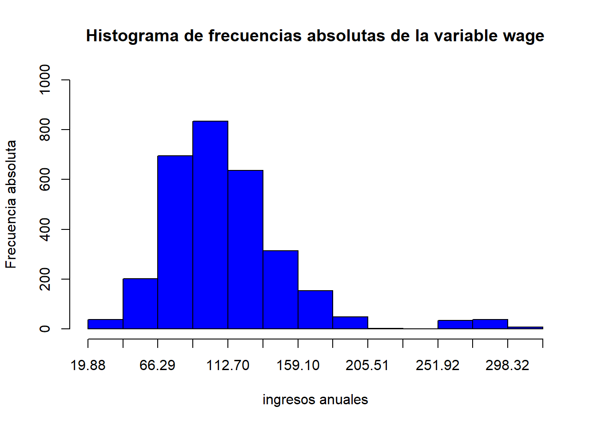
El coeficiente no es fiable para medir el grado de asimetría que presentan los datos, ya que no respeta las unidades de medida. Para ello se podría utilizar la gráfica que se define a continuación.
3.5.4 Diagrama de caja-bigote
Es un gráfico que se construyen a partir de los cuartiles. Consta de una caja, cuyo límite inferior es el primer cuartil y su límite superior es el tercer cuartil. Por tanto, dentro de la caja están el 50% de los datos. La caja esa dividida por una línea interior que es la la mediana de la variable.
Y en los extremos de la caja hay sendas líneas, los bigotes. La del extremo superior llega hasta el valor \[\min\{\max X, Q_{0.75} + 1.5 (Q_{0.75}-Q_{0.25})\}\] y la del extremo inferior hasta \[\max\{\min X, Q_{0.25} - 1.5 (Q_{0.75}-Q_{0.25})\},\] es decir, se alargan desde el correspondiente extremo de la caja 1.5 veces el rango intercuartílico (siempre y cuando dicho valor supere los valores máximo y mínimo, respectivamente).
Los valores que quedan fuera de las líneas anteriores se consideran valores atípicos. Si una muestra presenta valores atípicos se debe investigar el motivo por el que están en la muestra. Muchas veces se debe a errores en la introducción de los datos. En ese caso, habría que eliminar dichos valores, o corregirlos. Otras veces, son valores correctos, y habría entonces que pensar si dichos valores se dejan en la muestra de datos o no para que los resultados globales sean representativos de la población en general.
El diagrama de caja-bigotes también proporciona información sobre la simetría de la distribución de los datos, ya que en las variables simétricas la mediana debería estar en la mitad de la caja y los bigotes tener la misma longitud.
El comando en R para obtener estos diagramas es boxplot.
Ejemplo
Dibujar el diagrama de caja-bigotes de la variable wage que da el salario anual.
Solución:
boxplot( wage,
main="Diagrama de caja para wage")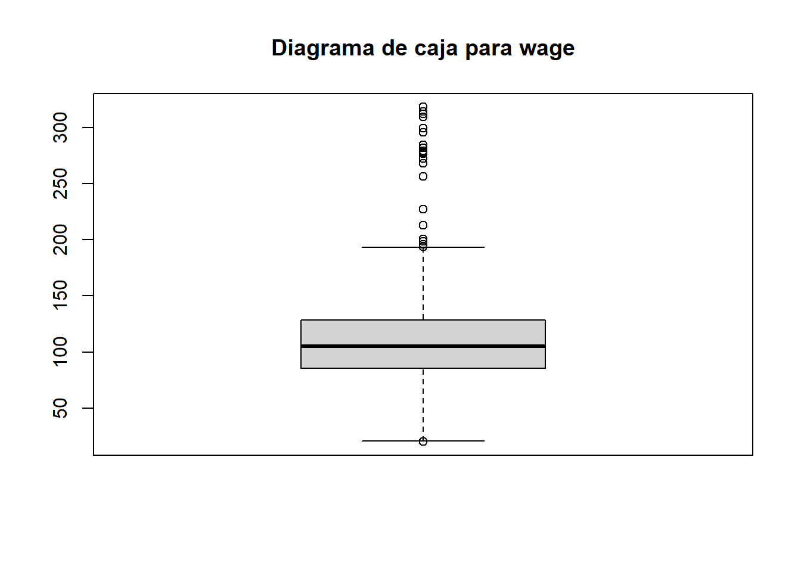
Como vemos, la variable wage tiene valores atípicos, uno por debajo del bigote inferior y muchos por encima del bigote supereior. Veamos cómo quitar dichos valores con la ayuda de R utilizando comando que ya hemos visto. Como el límite inferior del bigote inferior del diagrama de caja viene dado por \[ \max\{ Q_{0.25} - 1.5*(Q_{0.75}-Q_{0.25}) , \min(wage) \}. \] podemos calcular esa cota con R como:
max(quantile( wage, probs=0.25) - 1.5 * IQR(wage),min(wage))[1] 20.43912Análogamente, como el límite superior del bigote superior viene dado por \[ \min \{ Q_{0.75} + 1.5*(Q_{0.75}-Q_{0.25}) , \max(wage) \},\] se puede calcular como dicho valor como :
min( quantile( wage, probs=0.75) + 1.5 * IQR(wage), max(wage))[1] 193.6253Para quitar de la muestra los valores atípicos nos quedaremos con los valores de wage que sean mayores que 20.43912 y menores que 193.6253. Archivaremos dichos datos en la variable auxiliar wage2:
wage2 <- wage[ wage > 20.43912 & wage < 193.6253 ]Vamos a obtener el diagrama de caja para esta nueva muestra y analizar las diferencias:
boxplot( wage2 )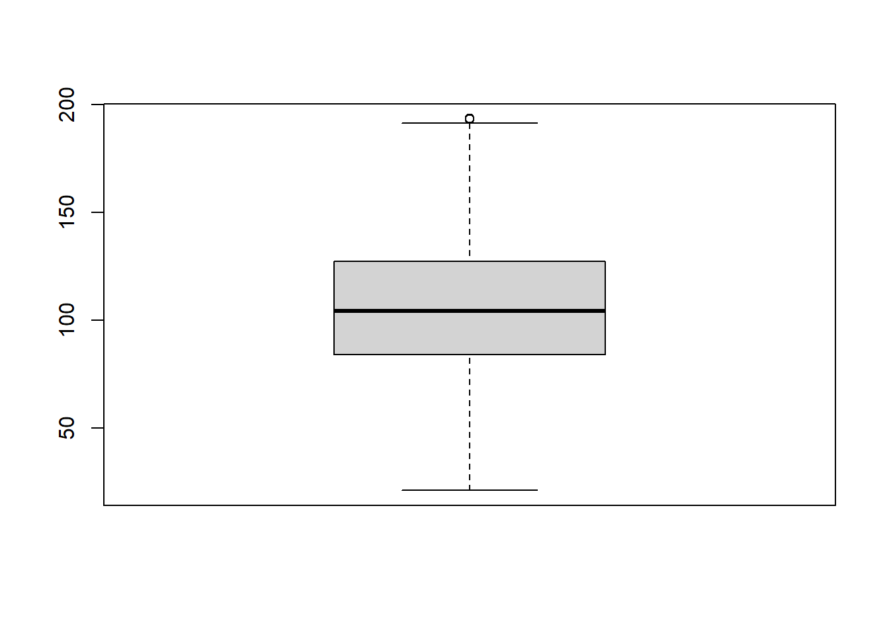
Vemos que la variable wage2 vuelve a tener un valor atípico. Este valor no era atípico para la variable wage, porque al haber otros datos con valores todavía más altos, hacían que ese dato no pareciera raro. Pero ahora, al haberlos eliminado, ese dato sí que es atípico en comparación con los que quedan ahora. Si quisiéramos eliminar dicho valor, deberíamos repetir el mismo proceso:
limitesup <- min( quantile( wage2, probs=0.75) + 1.5 * IQR(wage2), max(wage2))
wage3 <- wage2[ wage2 < limitesup ]
boxplot(wage3)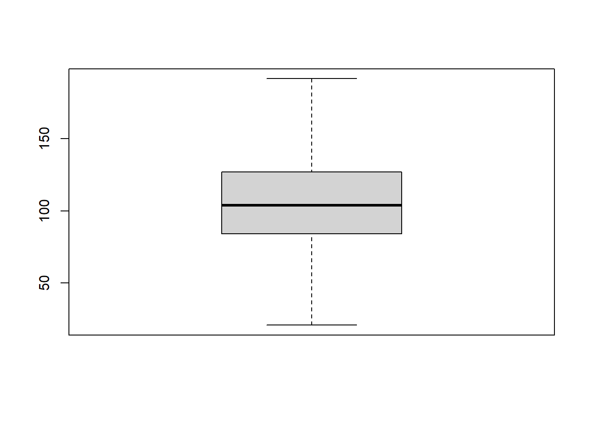
Vemos que ahora la variable wage3 ya no contiene valores atípicos.